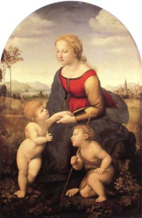
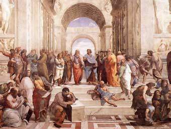

(Raffaello Santi o Sanzio; Urbino, actual Italia, 1483 - Roma, 1520) Pintor y arquitecto italiano. Sus obras representan el paradigma del Renacimiento por su clasicismo equilibrado y sereno basado en la perfección de la luz, la composición y la perspectiva. Su padre, que fue el pintor y humanista Giovanni Santi, lo introdujo pronto en las ideas filosóficas de la época y en el arte de la pintura, pero falleció cuando Rafael contaba once años; para ganarse la vida, a los diecisiete años trabajaba ya como artista independiente. No se conoce con exactitud qué tipo de relación mantuvo Rafael con Perugino, del que unos lo consideran discípulo y otros socio o colaborador. Sea como fuere, lo cierto es que superó rápidamente a Perugino, como se desprende de la comparación de sus Desposorios de la Virgen con los de este último. Desde 1504 hasta 1508, trabajó fundamentalmente en Florencia, en donde recibió la influencia del arte de Leonardo da Vinci y Miguel Ángel.
De entre sus obras de este período (El sueño del caballero, Las tres Gracias), las más celebradas son sus variaciones sobre el tema de la Virgen y la Sagrada Familia. Los personajes sagrados, dotados de cautivadores toques de gracia, nobleza y ternura, están situados en un marco de paisajes sencillos y tranquilos, intemporales. En estas telas, Rafael da muestras de su inigualable talento para traducir a un lenguaje sencillo y asequible los temas religiosos. Su maestría en la composición y la expresión y la característica serenidad de su arte se despliegan ya en plenitud en la Madona del gran duque, La bella jardinera o La Madona del jilguero, entre otras obras.
En 1508, el papa Julio II lo llamó a Roma para que decorara sus aposentos en el Vaticano. Aunque contaba sólo veinticinco años, era ya un pintor de enorme reputación. En las habitaciones de Julio II, conocidas en la actualidad como Estancias del Vaticano, Rafael pintó uno de los ciclos de frescos más famosos de la historia de la pintura.
Entre 1509 y 1511 decoró la Estancia de la Signatura, donde pintó las figuras de la Teología, la Filosofía, la Poesía y la Justicia en los cuatro medallones de la bóveda, para desarrollar de forma alegórica estos mismos temas en cinco grandes composiciones sobre las paredes: El triunfo de la Eucaristía, La escuela de Atenas, El Parnaso, Gregorio IX promulgando las Decretales y Triboniano remitiendo las pandectas a Justiniano, estas dos últimas alusivas a la justicia. En un espacio de gran amplitud, organizado con un perfecto sentido de la perspectiva, Rafael dispone una serie de grupos y figuras, con un absoluto equilibrio de fuerzas y una sublime elegancia de líneas. No se puede pedir mayor rigor compositivo ni un uso más magistral de la perspectiva lineal.
Entre 1509 y 1511 decoró la Estancia de la Signatura, donde pintó las figuras de la Teología, la Filosofía, la Poesía y la Justicia en los cuatro medallones de la bóveda, para desarrollar de forma alegórica estos mismos temas en cinco grandes composiciones sobre las paredes: El triunfo de la Eucaristía, La escuela de Atenas, El Parnaso, Gregorio IX promulgando las Decretales y Triboniano remitiendo las pandectas a Justiniano, estas dos últimas alusivas a la justicia. En un espacio de gran amplitud, organizado con un perfecto sentido de la perspectiva, Rafael dispone una serie de grupos y figuras, con un absoluto equilibrio de fuerzas y una sublime elegancia de líneas. No se puede pedir mayor rigor compositivo ni un uso más magistral de la perspectiva lineal.
En la Estancia de Heliodoro, decorada de 1511 a 1514, Rafael desarrolló cuatro temas históricos, acentuando en cada uno de ellos un rasgo plástico determinado: el claroscuro en La liberación de San Pedro, la riqueza del colorido en la Misa de Bolsena, etc. En la estancia del Incendio del Borgo (1514-1517) predomina ya la aportación de los discípulos sobre la del maestro, lo mismo que en la Estancia de Constantino, donde sólo la concepción del conjunto corresponde a Rafael.
El pintor simultaneó la decoración de las Estancias del Vaticano con la realización de otras obras, como los frescos de El triunfo de Galatea para la Villa Farnesina. A este período corresponden también numerosos cuadros de la Virgen con el Niño, algo más solemnes y menos cautivadores que los de la etapa florentina. Los retratos romanos, en cambio, superan en veracidad y penetración psicológica a los florentinos. En ambos casos, el dibujo es de una calidad inigualable y el colorido, discreto, servidor de la forma.
A partir de 1518, Rafael se ocupó de la decoración de las Logias del Vaticano con pequeñas escenas del Antiguo Testamento envueltas en paneles de grutescos. La Transfiguración, última obra del artista, es considerada por algunos el compendio perfecto de su arte. Sus trabajos arquitectónicos, de menor importancia que los pictóricos, incluyeron la dirección de las obras de San Pedro del Vaticano.
Volver